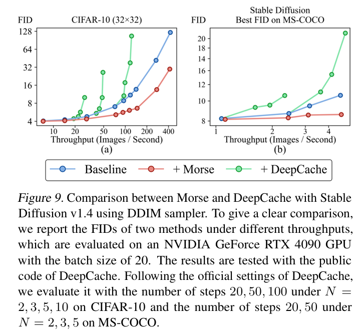

全文翻译
摘要
在本文中，我们提出了Morse，一种简单的双采样框架，用于无损加速扩散模型。Morse的核心思想是通过利用快速跳跃采样和自适应残差反馈策略，重新构建迭代生成过程（从噪声到数据）。具体而言，Morse包含两个相互交互的模型，称为Dash和Dot。Dash模型只是任何类型的预训练扩散模型，但在跳跃采样机制下运行，为采样效率的提升创造了足够的空间。Dot模型比Dash模型快得多，它经过学习，能够基于Dash模型轨迹上当前跳跃采样点的观测值生成残差反馈，将噪声估计提升到无需跳跃采样即可轻松匹配Dash模型的下一步估计。通过以时间交错的方式链接Dash和Dot模型的输出，Morse展现出在提高整体运行效率的同时，灵活实现所需图像生成性能的优点。借助我们提出的Dash和Dot模型之间的权重共享策略，Morse在训练和推理方面都很高效。在6个图像生成任务上，相对于9个基线扩散模型，我们的方法在广泛的采样步骤预算范围内，平均实现了1.78×至3.31×的无损加速。此外，我们表明，我们的方法还可以推广到改进专为少步文本到图像合成设计的潜在一致性模型（LCM-SDXL，其已通过一致性蒸馏技术进行了加速）。代码和模型可在https://github.com/deep-optimization/Morse获取。
1. 引言
扩散模型（DMs）作为一类基于似然的生成模型，已在图像生成（Ho等人，2022）、文本到图像生成（Zhang等人，2023）、视频创作（Blattmann等人，2023）、文本到3D合成（Poole等人，2023）和音频合成（Liu等人，2022）等多种生成建模任务中取得了显著性能。DMs的强大泛化能力源于前向-后向扩散框架：前向过程通过T步噪声调度（通常默认T=1000）将数据逐渐退化到随机噪声，而后向过程则学习一个神经网络来迭代估计并去除添加到数据中的噪声。然而，为了生成高质量样本，DMs通常需要数百次采样步骤（即训练模型的函数评估）。这种缓慢的采样效率在推理时会产生巨大的计算开销，尤其是对于DALL-E（Ramesh等人，2022）、Imagen（Saharia等人，2022）和Stable Diffusion（Rombach等人，2022；Podell等人，2024）等大规模DMs而言，给DMs的部署带来了巨大挑战。
最近，已有许多研究致力于为DMs设计快速采样器，这些方法主要可分为两大类。第一类专注于为采样过程开发更先进的公式，以实现更快的收敛。去噪扩散隐式模型（DDIM）（Mohamed & Lakshminarayanan，2016；Song等人，2021a）、随机微分方程（SDE）（Song等人，2021b）和基于常微分方程（ODE）的求解器（Zhang & Chen，2023；Lu等人，2022）是其中的代表性方法。值得注意的是，ODE采样器能够在数十步采样内生成高质量样本。第二类则依赖知识蒸馏方案，如渐进式蒸馏（Salimans & Ho，2022）、两阶段渐进式蒸馏（Meng等人，2023）和一致性蒸馏（Song等人，2023；Luo等人，2023），通过这些方法，使用蒸馏采样器的学生DM生成的少步样本可以匹配其对应教师DM的多步输出。
在这项工作中，我们尝试从更广义的角度提高DMs的采样效率。具体而言，我们提出疑问：给定一个预训练DM（无论其 backbone 是U-Net还是基于自注意力的结构），无论使用何种现有采样器，是否有可能重新构建迭代去噪生成过程（从噪声到数据），从而在广泛的采样步骤预算（包括数百步、数十步和少步采样）下实现更好的性能-效率权衡？为解决这一问题，我们的方法受到主流DMs的一个共同特性的启发。我们注意到，它们通常支持函数评估中的跳跃采样（JS），尤其是在使用上述快速采样器时。这一观察促使我们探索使用JS来构建我们的方法。不出所料，借助JS，主流DMs可以更快地生成样本，但由于扩散轨迹上每两个相邻JS点之间未访问步骤的信息丢失，不可避免地会导致样本质量下降。随着JS步长的增加，性能退化问题变得更加严重。因此，JS的双刃剑特性使其无法用于性能无损的加速。
我们通过提出Morse来克服这一障碍。Morse是一个简单的扩散加速框架，由两个称为Dash和Dot的模型组成，它们巧妙地将JS与一种新颖的残差反馈学习策略相结合，补偿信息丢失，并在图像生成质量方面实现所需的无损加速。在Morse的公式中：（1）Dash模型正是需要加速的预训练扩散模型，但在JS机制下运行，为采样效率提升创造了足够空间；（2）Dot模型比Dash模型快得多（例如，延迟低数倍），它经过学习，能够基于Dash模型轨迹上当前JS点的观测值（包括输入和输出样本、时间步和噪声估计）生成残差反馈，将噪声估计提升到紧密匹配Dash模型在无JS情况下的下一步估计；（3）Morse以时间交错的方式链接Dash和Dot模型的输出，使我们能够轻松选择合适的JS步长，从而在广泛的采样步骤预算下实现性能-效率权衡。有趣的是，由于Dot模型比Dash模型快得多，它能够在两个相邻JS点的间隔内执行比Dash模型多若干次的采样步骤，同时保持相同的速度。受益于这一吸引人的优点，相对于预训练目标DMs，我们的方法可以在相同的采样步骤预算下执行更多采样步骤，为实现所需的加速目标奠定了坚实基础。除了加速DMs的强大能力外，由于我们提出的Dash和Dot模型之间的权重共享策略，Morse在训练和推理方面也很高效。在该策略中，我们通过在预训练DM上添加额外的轻量级块来构建Dot模型，并采用轻量级低秩适应（LoRA）（Hu等人，2022）进行快速训练。在Dot模型的训练过程中，来自Dash模型的共享权重保持固定，而新添加的层和LoRA模块则联合训练。在六个公共图像生成基准上，我们的方法在许多实验设置下都取得了有希望的结果。在图1中，我们展示了使用Stable Diffusion和LCM-SDXL在不同采样步骤预算下，有无Morse时的文本到图像生成的说明性结果。
| 图 1: 使用和不使用 Morse 时，Stable Diffusion（Rombach 等人，2022）和使用潜在一致性模型微调的 Stable Diffusion XL（LCM-SDXL）（Luo 等人，2023）进行文本到图像生成的样本。为简化起见，我们使用基线 DM 的每步延迟（LSD）作为时间单位来计算扩散过程的总延迟。 |
2. 方法
2.1 背景与动机
基本概念
扩散模型（DM）能够生成高质量图像，其包含将图像转换为噪声的前向过程和将噪声转换为图像的生成过程（即反向过程），这两个过程通常都被表述为总共T个时间步的马尔可夫链。在前向过程中，首先从数据分布D中采样图像$x_0 \in \mathbb{R}^{h×w×c}$。在第t个时间步，样本$x_t$会被添加与自身维度相同的随机噪声$\epsilon \sim \mathcal{N}(0, I)$，从而生成下一时间步$t+1$的样本$x_{t+1}$。给定$x_0$时$x_t$的条件分布可表示为：
其中$p(x_0) \sim D$，$p(x_i | x_{i-1})$对应添加噪声的参数化函数。随着t增加，$x_t$的噪声逐渐增加，当t=T时，$x_T$服从分布$\mathcal{N}(0, I)$。借助前向过程，可训练神经网络$\theta$从任意时间步t估计原始图像$x_0$（等价于估计噪声$\epsilon$）：
其中$z_t$表示训练网络$\theta$生成的用于近似$x_0$的估计值。此时，我们可利用$\theta$将前向过程从加噪逆转为去噪以生成图像。具体而言，在生成过程中，首先采样噪声$\epsilon \sim \mathcal{N}(0, I)$作为$x_T$。借助$\theta$的估计值$z_t$，我们可利用贝叶斯法则和公式(1)，通过$p(x_{t-1} | x_t, x_0 = z_t)$来近似$p(x_{t-1} | x_t)$的分布：
因此，我们可以沿着时间步从T到0，利用$p(x_0 | x_T) = \int (p(x_T) \prod_{i=1}^T p(x_{i-1} | x_i)) dx_{1:T-1}$，将噪声$x_T$迭代转换为图像$x_0$。至此，我们可按照公式(3)通过T次采样步骤生成高质量图像。然而，这种生成过程非常耗时——在T个步骤的每一步中，训练好的网络$\theta$都需要进行一次评估。由于总步骤数T通常非常大（例如DDPM（Ho等人，2020）中$T=1000$），因此生成过程能否很好地近似前向过程的逆过程至关重要（Sohl-Dickstein等人，2015；Ho等人，2020；Song等人，2021a）。
跳跃采样
为提高采样效率，大多数主流DM采用跳跃采样（JS）策略——即不访问所有时间步$T, …, 0$，而仅访问其递减子序列。我们将该子序列记为$t_n > \dots > t_0$（$t_i \in [0, T]$），通常从T到0均匀采样。因此，访问的步骤数n远小于总时间步数T，从而使生成过程更快。在JS下，每个采样步骤可表示为：
其中$\phi$是用于将样本从$x_{t_i}$更新到$x_{t_{i-1}}$的调度函数，其定义取决于不同的采样器（例如DDPM（Ho等人，2020）、DDIM（Song等人，2021a）、SDE（Song等人，2021b）、DPM-Solver（Lu等人，2022）、CM（Song等人，2023））。直观来看，对于生成过程，相邻步骤的样本$x_t$和时间步t作为$\theta$的输入时往往相似，从而产生相似的估计值$z_t$。因此，借助估计值$z_{t_i}$，样本可以从$t_i$跨越多个步骤到达$t_{i-1}$并保持相同估计，而对样本质量影响不大。随着跳跃的步骤数增加，相邻JS点之间的步长变长，性能退化问题也愈发严重。因此，JS的双刃剑特性使其无法用于性能无损的加速，但也为我们提供了进一步改进的空间——如果能在保持高采样效率的同时有效减少JS导致的信息丢失，就能实现更好的性能-效率权衡，这正是我们工作的核心动机。
2.2 Morse
如前所述，我们的核心动机是在保持高采样效率的同时有效减少JS导致的信息丢失。为实现这一目标，我们提出了Morse——一种带有双采样的简单扩散加速框架，如图2所示。借助Morse，生成过程从单个模型的迭代重构为两个模型（Dash和Dot）之间的交互。
| 图 2: Morse 扩散过程示意图。Morse 由两个名为 Dash 和 Dot 的模型组成，它们在生成过程中相互交互。Dash 是任何类型的预训练模型，需加速，在跳跃采样机制下运行。Dot 是我们新引入的模型，用于加速 Dash，其延迟比 Dash 快 N 倍。我们提供示例展示 Morse 的工作方式。为简化起见，我们使用基线 DM 的每步延迟（LSD）作为时间单位来计算扩散过程的总延迟（即 Dot 模型的每步延迟映射到基线 Dash 模型的延迟）。（a）标准生成过程，在 5 LSD 下执行 5 步；（b）标准生成过程，在 3 LSD 下执行 3 步；（c）使用 Morse 的生成过程，在 3 LSD 下执行 6 步。在相同延迟下，使用 Morse 的生成过程可以执行更多步骤并获得更好的样本质量。 |
Morse的公式化
Dash模型即为预训练DM，但在JS机制下运行，为采样效率提升创造了足够空间。Dot模型是我们新引入的用于加速Dash模型的模型，其速度比Dash模型快N倍。在生成过程中，每个采样步骤的噪声估计要么来自Dash模型，要么来自Dot模型，且这两个模型扮演不同角色——如2.1节所述，Dash模型可独立估计噪声；Dot模型则学习基于Dash轨迹上当前采样点的观测值（包括输入和输出样本、时间步、噪声估计）生成残差反馈，将噪声估计提升至紧密匹配Dash模型在无JS情况下的下一步估计。Morse以时间交错的方式链接Dash和Dot模型的输出。对于采用Morse的生成过程，我们将噪声估计的公式重构为：
其中$\theta$表示Dash模型，$\eta$表示Dot模型，$t_s$表示当Dot模型在步骤$t_i$生成噪声估计时，Dash轨迹上的当前采样点，$S = \{t_{s_d}, …, t_{s_1}\}$表示噪声估计来自Dash模型的采样步骤集合，是$t_n, …, t_0$的子序列。上述Morse公式简单且易于实现，并且如各种实验设置所验证的，其具有普遍加速扩散模型的强大能力。
Dash与Dot的权重共享
为降低Dot模型的训练和计算成本，我们引入了Dash与Dot之间的权重共享策略。如图3所示，我们通过在预训练Dash模型的顶部和底部分别添加m个可训练的轻量级下采样块和上采样块来构建Dot模型。与预训练块相比，这些额外块的通道数和层数显著减少。对于每个预训练块，其输入分辨率降低$4m^2$倍，因此Dot模型的速度显著快于Dash模型。训练Dot模型时，我们固定共享的预训练层，并采用轻量级低秩适应（LoRA）（Hu等人，2022）以快速适应新的训练目标和分辨率。通过这种简单且低成本的设计，Dot模型可高效地从预训练DM派生而来，因为它保留了Dash模型学习到的几乎所有知识。
| 图 3:Dash 和 Dot 之间的权重共享示意图。Dot 模型通过在预训练 Dash 模型的顶部和底部分别添加 m 个（图示示例中 m=1）可训练的轻量级下采样和上采样块来构建。$h×w$表示输入特征图的分辨率。训练 Dot 模型时，我们固定共享的预训练层，并添加轻量级低秩适应（LoRA）以帮助 Dot 模型快速收敛。 |
2.3 对Morse的深度理解
为深入理解Morse如何提高DMs的采样效率，我们从两个角度进行详细解释。
Morse如何加速不同的扩散模型？
借助JS，DMs可更快生成样本，但由于扩散轨迹上相邻JS点之间未访问步骤的信息丢失，不可避免导致样本质量下降。为补偿信息丢失，我们在每两个相邻JS点之间插入Dot的多个额外采样点，有效缩短JS步长。由于Dot比Dash快N倍，插入的采样步骤可由Dot完成，且仅需Dash所需时间预算的$1/N$。换句话说，相对于预训练DMs，Morse可在相同采样步骤预算下执行更多采样步骤。假设标准生成过程有n个采样步骤，在相同延迟（基线DM的n步采样延迟）下，Morse中可能有$n-k$（$0 \leq k < n$）个Dash采样步骤和$Nk$个Dot采样步骤，从而引入$(N-1)k$个额外采样步骤。给定特定采样步骤预算，Morse可通过控制$k$灵活改变JS步长。在Dot和Dash的噪声估计完全相同的理想情况下，加速比可达$(n-k+Nk)/n$，这是Morse的加速上限。
Dot如何在噪声估计上表现得像Dash？
为回答这一问题，我们重申Dot模型的设计：（1）Dot通过学习利用轨迹信息生成残差反馈与Dash协作；（2）Dot继承了Dash的大部分预训练权重。训练Dot模型时，我们固定共享的预训练层并添加LoRA以帮助其快速收敛。受益于第一个设计，Dot无需独立估计噪声，而是基于Dash轨迹上当前采样点的观测值生成残差反馈。通过将输入样本、输出样本、时间步和噪声估计作为输入，Dot获取了样本在两个采样步骤之间的更新信息，这极大帮助其调整Dash的噪声估计。第二个设计中，我们在Dash和Dot之间采用权重共享机制，使Dot能够继承Dash学习到的大部分知识，确保残差学习过程中Dash和Dot的一致性。此外，权重共享机制还提高了Morse的参数效率和训练效率——通过在预训练DM上添加额外的轻量级可训练块，Dot模型可借助LoRA高效训练。借助带有轨迹信息的自适应残差反馈策略和权重共享机制，Dot能够轻松将当前JS点的噪声估计提升至紧密匹配Dash模型的下一步估计。由于大多数流行DM都采用JS策略，因此Morse可在各种采样步骤预算下，广泛加速具有不同采样器、基准和网络架构的各类DM，如后文所示。
与基于蒸馏方法的区别
从从预训练模型学习知识的角度看，Morse与扩散的基于蒸馏方法有一定相似性，但两者在公式和侧重点上均有不同：（1）Morse将生成过程重构为Dash和Dot模型之间的交互，而非学生DM的迭代；（2）Morse采用带有轨迹信息的自适应残差反馈策略；（3）Morse的目标是有效减少跳跃采样导致的信息丢失，以实现无损加速目标。在基于蒸馏的方法中，学生DM被训练为在采样过程中使用少得多的步骤匹配其对应教师DM的输出，但始终存在性能退化问题；（4）Morse与基于蒸馏的方法互补，可用于进一步加速通过蒸馏训练的DM，如实验所示。
3. 实验
3.1 评估加速的指标
加速比
在展示实验结果之前，我们首先说明如何评估Morse的加速比。对于一个预训练的DM，我们假设有两种生成过程：使用Morse和不使用Morse。不使用Morse的过程总延迟为n，使用Morse的过程总延迟为l（n ≥ l），且这两个过程获得相同的评估指标。那么，在延迟l下，Morse的加速比可计算为n/l。
对于扩散模型（DM），我们首先在不同延迟下测量其使用和不使用Morse时的样本质量，主要使用最常用的指标Fréchet Inception Distance（FID，越低越好）（Heusel等人，2017）。采样步骤按照官方设置选择。然后，我们使用线性插值来拟合延迟和评估指标之间的曲线，以近似任何可用延迟下的评估指标。值得注意的是，评估所有延迟下的指标过于耗时。为了直观起见，我们计算Morse在所选延迟下的平均加速比。我们在一组延迟和加速比之间拟合曲线，以近似所有延迟下的加速比。所有模型的速度均使用NVIDIA GeForce RTX 3090进行测试。回想一下，Dot比Dash快N倍。不同GPU上模型的速度可能不同，导致N和加速比的变化。然而，我们发现一个Dash模型和它的Dot模型在不同GPU上的N几乎没有变化，我们的Morse始终表现出良好的加速能力。详情见附录。
LSD
为了简单和通用，我们使用基线DM的每步延迟（LSD）作为时间单位来标准化扩散过程的总延迟，即Dash模型执行一个采样步骤的时间成本（即Dot模型的每步延迟映射到基线Dash模型的延迟）。Dash执行一步需要1 LSD，Dot执行一步需要1/N LSD。对于不使用Morse且有π个采样步骤的扩散过程，其延迟（即生成图像的端到端时间）可以表示为π LSD。
3.2 加速图像生成
实验设置
对于实验中评估的每个DM，我们收集其官方预训练模型作为Dash模型，其权重是固定的。借助权重共享策略，所有Dot模型都按照官方训练设置进行训练，但通常使用减小的批量大小和训练迭代次数。我们通常将额外的下采样块和上采样块的数量m设置为2，导致N的范围在5到10之间。所有实验都在配备8个NVIDIA GeForce RTX 3090 GPU的服务器上进行。更多细节见附录。
不同的采样器
在实验中，我们使用主流采样器评估我们的Morse，包括离散采样器DDPM（Ho等人，2020）、DDIM（Song等人，2021a）、DPM-Solver（Lu等人，2022），以及连续采样器SDE（Song等人，2021b）、基于SDE的DPM-Solver。我们在CIFAR-10（Krizhevsky，2009）基准上进行实验，上述所有采样器都使用该基准进行实验。如图4所示，我们的Morse可以在3到100的不同LSD下，使用所有采样器一致地加速DM，实现2.01×到2.94×的平均加速比。结果还表明，我们的Morse可以同时与离散时间和连续时间方法配合使用。Morse甚至可以显著加速最先进的采样器DPM-Solver，该采样器通过利用先前步骤的轨迹信息，也可以用很少的步骤生成高质量的图像。请注意，我们在DDPM和SDE上对DPM-Solver在100 LSD下的Morse加速比计算为N/A，这些不用于计算平均加速比。原因是对于基线DM，当延迟大于100 LSD时，FID值始终保持相同（甚至更差），没有加速的空间。其他基准上不同采样器的结果见附录。
| 图 4: Morse 在 CIFAR-10 基准上使用不同采样器的结果。在 l 延迟下 n 的加速比意味着使用 Morse 的 DM 在 l 延迟下与不使用 Morse 的 DM 在 nl 延迟下达到相同的 FID。我们计算了所有延迟、3 到 15 LSD 和 20 到 100 LSD 的平均加速比。 |
不同的基准
在实验中，我们进一步使用5个流行的图像生成基准评估我们的Morse，包括CIFAR-10（32×32）（Krizhevsky，2009）、ImageNet（64×64）（Russakovsky等人，2015）、CelebA（64×64）（Liu等人，2015）、CelebA-HQ（256×256）和LSUN-Church（256×256）（Yu等人，2015）。由于我们已经使用不同的采样器评估了Morse，因此在以下实验中，除非另有说明，我们将采样器保持为最广泛使用的DDIM，以排除采样器差异的影响。结果如图5所示。我们的Morse可以很好地推广到所有基准，这些基准具有不同的图像分辨率（从LSUN-Church和CelebA-HQ的256×256到CIFAR-10的32×32）、不同的数据集大小（从ImageNet的120万到CelebA-HQ的3万）和不同的语义信息。对于所有基准在大多数LSD下，我们的Morse获得了约2×的加速比。在CelebA上，它甚至可以在某些LSD下实现超过4×的加速比。
| 图 5: Morse 在 DDIM 采样器下不同图像生成基准的结果。 |
不同的条件生成策略
在展示了Morse在无条件生成下的有效性后，我们接下来在ImageNet基准上使用不同的策略评估Morse在条件生成下的表现，包括类条件和分类器引导的图像生成（Ho & Salimans，2021），分辨率为64×64。对于分类器引导，我们将分类器视为Dash的一部分，并训练Dot来近似由分类器引导的估计。如图6所示，Morse可以很好地推广到具有不同策略的条件生成。
| 图 6: Morse 在 ImageNet 基准上使用不同条件生成策略的结果。 |
不同的网络架构
在上述实验中，从6项研究中收集了8种不同的网络架构，Dash模型的模型大小从35.75M到421.53M不等（Rombach等人，2022；Ho等人，2020；Nichol & Dhariwal，2021；Song等人，2021a；b；Dhariwal & Nichol，2021）。可以看出，我们的Morse在所有具有不同容量和模型大小的扩散架构下都具有良好的泛化能力。
3.3 加速文本到图像生成
接下来，我们在非常流行的文本到图像生成任务上，使用潜在空间的Stable Diffusion模型（Rombach等人，2022）评估我们的Morse。
实验设置_
我们选择Stable Diffusion v1.4作为我们的Dash模型，它使用来自LAION-5B数据集（Schuhmann等人，2022）的约20亿文本-图像对进行预训练。在我们的实验中，Dot模型仅使用从LAION-5B数据集中采样的200万对512×512分辨率的文本-图像对进行训练。我们使用DDIM作为采样器。遵循流行的评估协议，我们采用FID（越低越好）和CLIP分数（Radford等人，2021）（越高越好）作为评估指标，并使用来自MS-COCO（Lin等人，2014）验证集的提示生成30000个样本进行评估。CLIP分数使用ViT-g/14计算。所有实验都在配备8个NVIDIA Tesla V100 GPU的服务器上进行。更多细节见附录。
结果比较
按照默认设置，我们首先使用7.5的无分类器引导尺度评估Stable Diffusion使用和不使用Morse的FID。然而，我们发现对于标准Stable Diffusion，增加步骤数并不总是导致FID分数持续改善，如表1所示。因此，我们找到了另外两种方案来评估加速比。在第一种方案中，我们评估不同尺度下的FID，并选择最佳FID分数进行比较。从图7所示的结果中，我们可以发现，随着延迟的增加，最佳FID始终变得更好。在这种方案下，我们可以计算出2.29×的平均加速比。在另一种评估方案中，我们按照Stable Diffusion使用线性插值拟合不同尺度下FID和CLIP分数之间的曲线。结果如图8所示。当尺度大于4时，我们可以观察到两个指标之间的权衡。使用Morse的曲线低于不使用Morse的曲线。例如，在大多数尺度下，10 LSD下使用Morse的曲线低于20 LSD下不使用Morse的曲线，表明平均加速比约为2×。图1和附录中提供了一些用于比较的生成样本。结果进一步证明了Morse的泛化能力。在具有大型DM（859.52M）的流行文本到图像生成任务上，我们的Morse仍然显示出显著的加速能力。如表2所示，虽然Dash模型使用大量计算资源和大型数据集进行训练，但我们的Dot可以高效地训练，使用的文本-图像对比它少0.1%，训练成本也少0.1%。借助轨迹信息，Dot模型可以轻松在噪声估计上接近Dash模型。结果还表明，我们的Morse与无分类器引导和潜在空间扩散模型配合良好。
 |
|---|
| 表 1: MSCOCO 上使用和不使用 Morse 的 Stable Diffusion 的 FID。我们计算不同无分类器引导尺度下的 FID，并选择所有尺度中的最佳 FID 和默认尺度 7.5 下的 FID 进行比较。 |
| 表 2: Stable Diffusion 和 Morse 中相应 Dot 模型的训练细节。训练内存成本在每 GPU 批量大小为 8 时测试。 |
| 图 7: 不同延迟和尺度下使用和不使用 Morse 的 Stable Diffusion 结果。 |
| 图 8: Morse 与 Stable Diffusion 的结果。（a）和（b）是 Stable Diffusion 在不同 LSD 下，引导尺度为 2、3、4、5、6、7、7.5、8、9、10 时 FID 与 CLIP 分数的曲线，从左到右对应曲线中的点。我们用标准 Stable Diffusion 的曲线绘制背景以便更好地说明；（c）使用不同尺度下的最佳 FID 绘制 FID 与 LSD 的曲线。 |
LCM-SDXL与Morse
在上述实验中，我们已经证明了Morse在6个图像生成任务上加速9个基线扩散模型的强大能力。在这里，我们进一步表明，Morse还可以推广到改进潜在一致性模型（LCM）（Luo等人，2023），这是一种专门为少步文本到图像合成设计的流行基于蒸馏的方法。我们使用LCM-SDXL作为基线，它表示使用LCM微调的Stable Diffusion XL模型，分辨率为1024×1024。我们在MS-COCO基准上按照3.3节描述的方法评估LCM-SDXL与Morse。与Stable Diffusion一样，Stable Diffusion XL也采用无分类器引导，而LCM在蒸馏过程中固定尺度为7.5。在固定尺度7.5下，对于标准LCM-SDXL，我们注意到其FID分数并不随着步骤数的增加而持续改善，而CLIP分数则会改善。因此，我们选择CLIP分数作为评估LCM-SDXL与Morse的指标。结果如表4所示。由于Dot模型比Dash模型快3倍，我们可以在1.33和1.67的LSD下评估LCM-SDXL与Morse的CLIP分数。在1到4的采样步骤数上，我们可以计算出我们的Morse在CLIP分数上的平均加速比为1.43×。实验细节和一些用于比较的生成样本见附录。
| 表 4: MS-COCO 上使用和不使用 Morse 的 LCM-SDXL 的 CLIP 分数。 |
3.4 消融研究和更多比较
轨迹信息的影响
回想一下，我们的核心见解是轨迹信息可以帮助Dot模型在噪声估计上表现得像没有JS的Dash模型一样好。在Morse中，我们使用Dash轨迹上当前采样点的样本$x_t$、时间步$t_s$和噪声估计$z_{t_s}$作为Dot的额外输入。在实验中，我们使用DDIM采样器在CIFAR-10基准上使用10 LSD评估Morse与它们的不同组合。从表3所示的结果中，我们可以看到，每个输入都有助于Dot的残差估计。没有轨迹信息，Dot模型的引入不再能加速DM，因为其估计较差。这些消融结果证明了轨迹信息在我们的设计中起着关键作用，这在一定程度上也验证了我们的核心见解。
| 表 3: 使用不同轨迹信息的 Morse 消融实验。 |
与特征重用的比较
为了进一步证明Morse的有效性，我们将Morse与最先进的特征重用方法进行比较，包括DeepCache（Ma等人，2024）和PFDiff（Wang等人，2025）。与Morse一样，这些方法也探索时间步骤冗余来加速扩散模型，但方式不同。具体来说，DeepCache在接下来的$N-1$个步骤中重用步骤t的特征，而PFDiff利用存储在缓冲区中的过去步骤的状态来更新未来步骤的状态。如图9所示，我们可以发现，在两个基准上，Morse始终比DeepCache获得更好的吞吐量和FID。对于加速，由于在接下来的$N-1$个去噪步骤中重用了大部分步骤的特征，DeepCache在生成质量上是有损的，而Morse是无损的。从表5所示的结果中，我们可以发现，Morse也优于PFDiff。
| 表 5: MS-COCO 基准上 Morse 和 PFDiff 使用 Stable Diffusion 的 FID。PFDiff 的结果从论文中收集。遵循 PFDiff 的默认设置，我们在引导尺度 7.5 下使用 10000 个生成样本评估 Morse。 |
|  |
|---|
| 图 9: Morse 与 DeepCache 在 Stable Diffusion v1.4 上使用 DDIM 采样器的比较。为了清晰比较，我们报告了两种方法在不同吞吐量下的 FID，这些结果在 NVIDIA GeForce RTX 4090 GPU 上使用批量大小 20 进行评估。结果使用 DeepCache 的公开代码测试。遵循 DeepCache 的官方设置，我们在 CIFAR-10 上使用步骤数 20、50、100 和 N=2、3、5、10 进行评估，在 MS-COCO 上使用步骤数 20、50 和 N=2、3、5 进行评估。 |
与时间步调度优化的比较
为了加速扩散模型，时间步调度优化方法设计不同的策略来选择最佳时间步，当给定少量采样步骤时。这一系列工作也与Morse密切相关。在表6中，我们提供了Morse和AYS（Sabour等人，2024）之间的比较结果，AYS是该领域的最先进方法。如图所示，在不同的采样步骤预算下，Morse的表现优于AYS。
| 表 6: ImageNet（64×64）基准上 Morse 和 AYS 的 FID。为了公平比较，我们从论文中收集 AYS 的结果，并在相同设置下评估 Morse。 |
更多消融和讨论
在附录中，我们提供了更多关于Morse的消融实验和讨论，以更好地理解，包括：（1）Dash模型和Dot模型在不同GPU上的运行时延迟；（2）确定Morse调度的原则；（3）Morse在使用Dash的不同步骤数的特定延迟下的性能；（4）Dot模型不同架构设计之间的比较；（5）其他结果和更多生成样本。
4. 相关工作
除了引言部分讨论的快速采样器外，还有其他新兴工作致力于加速DM的推理。一些近期研究使用量化（Li等人，2023b；Chen等人，2023b）、剪枝（Li等人，2022；Wang等人，2024）、参数和特征图的重用（Agarwal等人，2024；Wimbauer等人，2024；Ma等人，2024）、时间步调度优化（Watson等人，2021；Xue等人，2024；Sabour等人，2024）以及GPU专用优化（Chen等人，2023c；Li等人，2024）来降低运行时模型延迟。另一类研究（Li等人，2023c；Xu等人，2024；Li等人，2023a）致力于为DM设计轻量级网络架构，使其能够部署在移动设备上。在设计上，我们的方法与这些方法正交，因此应该能够与它们结合以提升性能。
使用双模型设计来实现更好的准确性-效率权衡的想法在计算机视觉和自然语言处理中都很常见。SlowFast网络（Feichtenhofer等人，2019）是一种强大且高效的视频动作识别架构，它使用低帧率、低分辨率的慢速路径来编码空间语义，同时使用高帧率、高分辨率的并行快速路径来编码运动线索。推测解码（Stern等人，2018）是一种用于加速自回归语言模型推理的快速解码机制，它使用小型近似模型预测候选标记，并通过大型强大的目标模型进行单次前向传递来验证这些候选标记的可接受性，从而显著减少被接受标记的计算量。许多变体（Li等人，2020；Leviathan等人，2023；Chen等人，2023a；Zhang等人，2024）已被提出。尽管我们的方法也是双模型设计，但它专注于使用简单框架加速扩散模型，其核心见解是通过利用快速跳跃采样和自适应残差反馈策略来重新构建迭代生成过程（从噪声到数据）。显然，我们的方法在重点、动机和公式上与它们不同。
5. 讨论与结论
我们提出了一个名为Morse的简单双采样框架，用于无损加速扩散模型。Morse通过引入两个相互交互的模型Dash和Dot来重构迭代生成过程，展现出在提高整体采样效率的同时灵活实现高保真图像生成的优点。实验结果表明，Morse可在各种设置下普遍加速扩散模型。尽管Morse展示了通用的加速能力，但它引入了一个具有少量可训练参数的额外Dot模型。
影响声明
作为扩散模型的加速方法，Morse与大多数生成式AI模型具有类似的广泛影响。例如，它可能被滥用，用于帮助创建逼真的假新闻和视频来传播虚假信息。
A. 附录
A.1 基准和评估细节
图像生成
在3.2节描述的实验中，我们考虑了5个具有各种分辨率的主流图像生成基准，以评估我们的Morse的泛化能力，包括CIFAR-10（32×32，5万张图像）（Krizhevsky，2009）、CelebA（64×64，20万张图像）（Liu等人，2015）、ImageNet（64×64，120万张图像）（Russakovsky等人，2015）、CelebA-HQ（256×256，3万张图像）（Liu等人，2015）、LSUN-Church（256×256，10万张图像）（Yu等人，2015）。遵循流行的评估协议，对于每个DM，我们生成50000个样本，并计算生成图像与相应基准图像之间的FID分数。为了公平比较，我们采用了相应DM的设置，包括数据处理管道和超参数。
文本到图像生成
在Stable Diffusion v1.4和LCM-SDXL的实验中，我们使用从LAION-5B（Schuhmann等人，2022）数据集中采样的200万对文本-图像对。遵循流行的评估协议，我们在MS-COCO 2014验证集（Lin等人，2014）（256×256）上对零样本文本到图像生成的文本到图像扩散模型进行评估。所有生成的图像从512×512下采样到256×256进行评估。对于每个DM，我们使用验证集的提示生成30000个样本。CLIP分数使用ViT-g/14计算。
A.2 Stable Diffusion的实现细节
实现细节
对于文本到图像生成，我们使用Stable Diffusion v1.4（Rombach等人，2022）评估我们的Morse。在实验中，我们使用额外参数为97.84M的Dot模型来加速大小为859.52M的Dash模型。Dash模型和Dot模型的延迟分别为每批0.709秒和0.082秒（N=8.6），这是在单个NVIDIA GeForce RTX 3090上使用批量大小20测试的。根据官方设置，Stable Diffusion v1.4使用来自LAION-5B数据集（Schuhmann等人，2022）的约20亿对256×256分辨率的文本-图像对进行预训练，并使用约6亿对512×512分辨率的文本-图像对进行微调。我们在预训练的Stable Diffusion的顶部和底部分别添加两个可训练的下采样块和上采样块，通道数分别为96和160，以构建Dot模型。我们将LoRA的秩设置为64。在我们的实验中，Dot模型仅使用从LAION-5B数据集中采样的约200万对512×512分辨率的文本-图像对进行100000次迭代训练。我们使用DDIM作为采样器。
对于条件图像生成，Stable Diffusion v1.4采用无分类器引导，它有一个称为引导尺度的参数来控制文本提示对生成过程的影响。为了确保我们的Morse除了不同的步骤数之外，还能与不同的引导尺度配合良好，我们在训练过程中也在2到10之间随机采样引导尺度。Dot模型在配备8个NVIDIA Tesla V100 GPU的服务器上训练。考虑到生成模型被滥用的风险，我们对发布的模型使用了Stable Diffusion项目采用的安全检查模块。
每个块的延迟
通过向DM添加额外块来构建更快的Dot模型可能并不直观。在这里，我们在图10中提供了Stable Diffusion在添加和不添加额外块时每个块的延迟。最先进的DM大多采用带有自注意力层的U-Net架构。通过在预训练的Stable Diffusion的顶部和底部添加额外块，每个预训练块的输入分辨率降低了16倍，这显著降低了预训练块的延迟。此外，额外块具有与预训练块相同的架构，但移除了自注意力层。由于自注意力层的计算复杂度随标记数量的增加而呈二次增长，具有高分辨率特征图的预训练块的推理速度相对较慢。通过移除自注意力层并减少通道数量，具有高分辨率特征图的额外块的延迟仍然相对较低。因此，Dot模型可以比Dash模型快得多。
| 图 10: 添加和不添加额外下采样和上采样块的 Stable Diffusion 每个块的延迟（秒）。速度在单个 NVIDIA RTX 3090 GPU 上使用批量大小 20 进行测试。 |
A.3 LCM-SDXL的实现细节
在主要实验中，我们还在潜在一致性模型（Luo等人，2023）（分辨率为1024×1024的LCM-SDXL，其已通过一致性蒸馏技术加速）上评估了我们的Morse。LCM-SDXL可用于高质量的少步文本到图像生成，它使用大量计算资源和大型数据集进行训练。我们在预训练的LCM-SDXL的顶部和底部分别添加一个可训练的下采样块和上采样块。对于每个原始预训练块，其输入分辨率降低了4倍。Dash模型和Dot模型的延迟分别为每批0.646秒和0.211秒（N=3.1），这是在单个NVIDIA Tesla V100上使用批量大小5测试的。我们固定共享的预训练层（除了一些不匹配的层），并添加轻量级低秩适应（LoRA）（Hu等人，2022）来帮助Dot模型快速收敛。与模型大小为2567.55M的LCM-SDXL相比，Dot模型仅具有229.19M的可训练参数，可以高效地注入到Dash模型中。在我们的实验中，Dot模型使用来自LAION-5B数据集的约200万对1024×1024分辨率的文本-图像对进行100000次迭代训练。Dot模型在配备8个NVIDIA Tesla V100 GPU的服务器上训练。
A.4 图像生成的实现细节
在本节中，我们提供了实验中用于图像生成的所有DM的实现细节。
训练和采样
在主要实验中，我们采用了多个DM来评估Morse的有效性，包括来自DDPM（Ho等人，2020）、DDIM（Song等人，2021a）、改进的DDPM（Nichol & Dhariwal，2021）、SDE（Song等人，2021b）、LDM（Rombach等人，2022）和ADM（Dhariwal & Nichol，2021）的模型。对于DM，我们收集其官方预训练模型作为Dash模型。为了构建相应的Dot模型，我们在每个预训练的Dash模型的顶部和底部分别添加两个轻量级下采样块和上采样块。借助权重共享策略，所有Dot模型都按照官方训练设置进行训练。如表7所示，我们提供了详细信息，包括源模型、Dash模型和Dot模型的速度以及N。回想一下，Dot模型比Dash模型快N倍。所有不同模型的速度都使用单个NVIDIA GeForce RTX 3090进行测试。测试速度时，除了CelebA-HQ和MS-COCO基准使用批量大小20外，大多数基准的批量大小设置为100。在训练过程中，Dot模型被训练来估计Dash模型在两个随机采样步骤的输出之间的差异。这里，我们给出了DDIM采样器的训练过程和采样过程的示例，如算法1和算法2所示。这些过程可以通过简单的修改轻松扩展到其他采样器。Dot模型在配备8个NVIDIA Tesla V100 GPU或8个NVIDIA GeForce RTX 4090 GPU的服务器上训练。
| 表 7: 不同 GPU 上 Dash 模型和 Dot 模型的每采样步延迟（秒）。N 表示 Dot 模型比 Dash 模型快 N 倍。$h×w$表示输入特征图的分辨率。 |
不同GPU上的N
回想一下，Dot比Dash快N倍。对于Dash模型及其训练的Dot模型，当N越大时，Morse的加速比越大。然而，不同GPU上模型的速度可能不同，导致N和加速比的变化。在我们的设计中，我们通过在预训练的Dash模型的顶部和底部添加几个额外块来构建Dot模型。因此，Dot模型的架构与其对应的Dash模型非常相似。如表7所示，我们可以发现，一对Dash和Dot在不同GPU上的N几乎没有变化。结果表明，我们的Morse在不同GPU上表现良好。
如何确定Morse的调度
一般来说，Morse的调度如何确定取决于三个关键因素：（1）Dash模型的基于跳跃采样的扩散子序列的选择。借助跳跃采样，仅访问可用时间步（例如，T,…,0）的子序列。显然，有不同的策略来选择子序列。在Morse中，我们通常遵循任何预训练扩散模型（即Dash模型）的标准跳跃采样设置（大多数现有扩散方法都支持）使用简单的选择策略，以便于实现；（2）给定Dash和Dot的采样步骤数，如何确定它们的顺序。对于使用Morse的扩散过程，我们将Dash的采样步骤数表示为$k_{dash}$，Dot的采样步骤数表示为$k_{dot}$，总共有$k_{dash}+k_{dot}$个采样步骤。由于Dot模型需要Dash模型的轨迹信息来预测其残差反馈，因此第一个采样步骤只能是Dash模型，然后我们可以灵活地决定剩余步骤的顺序。为了简单起见，我们均匀采样Dash和Dot模型的步骤。例如，如果$k_{dash}=2$且$k_{dot}=4$，则步骤的顺序可以表示为Dash、Dot、Dot、Dash、Dot、Dot；（3）给定所需的延迟预算，如何确定Dash和Dot的采样步骤数。回想一下，Dot比Dash快N倍。在所需的n LSD延迟下（LSD是定义的时间度量，即基线扩散模型执行一步的时间），Morse可能有$n-k$（$0 \leq k < n$）个Dash采样步骤和$Nk$个Dot采样步骤。问题是如何确定k。在Dot和Dash的噪声估计完全相同的理想情况下，Morse实现的加速比为$(n-k+Nk)/n$。然而，Morse可以在广泛的k范围内加速预训练的扩散模型（如图13所示）。基于我们在6个基准上对10个扩散模型的实验，我们建议将$(n-k+Nk)/n$设置在2.0和3.0之间，这通常会导致最佳结果。借助上述三个简单原则，可以轻松灵活地确定不同延迟下Morse的调度。
| 图 13: DDIM 采样器在 CIFAR-10（32×32）上不同 LSD 和交换步骤比下 Morse 的加速比。交换步骤比表示生成过程中 Dot 步骤的延迟与总延迟的比率。 |
A.5 研究Morse的更多实验
不同采样器的Morse
在3.2节描述的实验中，我们在CIFAR-10（32×32）基准上使用不同的采样器评估了我们的Morse。在这里，我们进行实验以进一步验证Morse在其他数据集上使用不同采样器的有效性。如图11所示，我们的Morse在CelebA-HQ（256×256）数据集上使用不同的采样器表现出良好的泛化能力。
 |
|---|
| 图 11: Morse 在 CelebA-HQ（256×256）基准上使用不同采样器的结果。 |
轨迹信息来自哪里？
回想一下，Morse在生成过程中重新定义了如何估计噪声：
在设计中，Dot模型基于Dash模型轨迹上的当前JS点的观测值生成残差反馈。对于另一个合理的设计，观测值也可以来自两个模型的轨迹，这可以表示为：
在实验中，我们在CIFAR-10数据集上使用DDIM采样器比较了这两种利用不同轨迹信息的设计。结果如图12所示。可以看出，我们的设计（使用来自Dash模型的轨迹信息）表现更好，实现了2.26×的平均加速比，而另一种设计为2.00×。在步骤数极少（例如3）的情况下，使用来自$t_{i-1}$的轨迹信息比来自$t_s$的更好。这可能是因为当步骤数非常小时，$t_s$和$t_i$之间的距离变得相对较大，这使得轨迹信息对Dot模型的帮助较小。我们还可以发现，Dot模型在使用来自自身的轨迹信息时也表现良好，尽管它在训练过程中使用来自Dash模型的轨迹信息进行训练。
| 图 12: Dot 使用来自 Dash 模型和两个模型轨迹信息的结果。 |
相同步骤数下的比较
为了评估不同采样步骤预算下Morse的加速比，我们在之前的实验中主要比较了使用和不使用Morse的DM在所选延迟下的表现。在图14中，我们提供了DM在所选步骤数下的结果，在给定的LSD预算下建立了一组不同的Dot和Dash的时间交错配置。可以看出，使用Morse的DM的曲线始终低于不使用Morse的曲线，表明Morse在不同的采样步骤数和总采样步骤数与来自Dot的噪声估计的采样步骤数之间的比例下具有一致的加速能力。
| 图 14: DDIM 采样器在不同采样步骤数下 Morse 的结果。对于使用 Morse 的扩散过程，我们设置 50%、60%、70%、80% 和 90% 的采样步骤使用 Dot 模型，其余步骤使用 Dash 模型。 |
交换步骤比的影响
回想一下，在n LSD的特定延迟下，Morse可能有$n-k$（$0 \leq k < n$）个Dash采样步骤和$Nk$个Dot采样步骤。Morse可以通过控制k灵活地改变JS步长。在这里，我们将交换步骤的比率定义为$k/n$。在实验中，我们探索了不同交换步骤比率的影响。我们在CIFAR-10数据集上使用DDIM采样器进行实验。结果如图13所示。在大多数LSD下，Morse在大多数比率下可以实现约2×的加速比。在我们将大多数Dash采样步骤交换为Dot采样步骤的极端情况下（例如，超过70%），加速比急剧下降到1.0×以下。我们认为，原因是当两个采样步骤之间的距离非常大时，轨迹信息对Dot模型的残差估计帮助较小，因为Dash的采样步骤少得多。
Dot的额外下采样和上采样块的不同设计
回想一下，我们通过向Dash模型添加2个可训练的轻量级下采样块和上采样块来构建Stable Diffusion的Dot模型。训练Dot模型时，我们固定共享的预训练层并采用轻量级LoRA。在实验中，我们研究了具有不同下采样和上采样设计的Dot模型的构建。我们评估了Dot模型的几种变体设计，包括：（1）使用建议的可训练块或双线性采样进行下采样和上采样；（2）使用或不使用LoRA训练Dot模型。共享的预训练层是固定的。从表8所示的结果中，我们可以看到，这两种设计都可以显著提高Morse的性能。如果没有微调，原始DM无法直接很好地适应较低的分辨率。而添加可训练的采样块和采用LoRA训练Dot模型可以分别增强可学习的和柔和的分辨率转换，并帮助预训练块适应新的分辨率。
 |
|---|
| 表 8: 使用不同 Dot 变体的 Stable Diffusion 的 FID。我们计算不同无分类器引导尺度下的 FID，并选择所有尺度中的最佳 FID。 |
Dot模型的不同架构
在实验中，我们评估了不与Dash模型共享预训练块的独立Dot模型的Morse性能。我们在MS-COCO数据集上使用Stable Diffusion进行实验。在变体设计中，Dot模型具有与Dash模型相似的架构，但通道数和块数减少。结果如表9所示。即使没有使用预训练权重进行微调，我们的Morse仍然可以加速Stable Diffusion。然而，它需要更多的训练迭代和可训练参数来实现与我们提出的设计相似的性能。结果证明了我们提出的用于训练Dot模型的权重共享策略的有效性和效率。同时也表明，我们可以灵活地构建具有不同架构的Dot模型。
| 表 9: Stable Diffusion 的 Dot 模型的不同架构。 |
A.6 更多生成样本
我们提供了一些在不同LSD下使用和不使用Morse的扩散模型生成的样本，用于更好的比较，包括CelebA-HQ（256×256）和LSUN-Church（256×256）的图像生成，以及使用Stable Diffusion v1.4和LCM-SDXL在MS-COCO上的文本到图像生成。
总结
本文提出了Dash与Dot两个概念，两者的组合得到Morse
Dash模型就是预训练的扩散模型
Dot模型在Dash模型的顶部和底部分别添加m个可训练的轻量级下采样块和上采样块来构建，基于Dash模型轨迹上当前JS点的观测值（包括输入和输出样本、时间步和噪声估计）生成残差反馈，将噪声估计提升到紧密匹配Dash模型在无JS情况下的下一步估计
通过在预训练DM上添加额外的轻量级块来构建Dot模型，并采用轻量级低秩适应（LoRA）（Hu等人，2022）进行快速训练，在Dot模型的训练过程中，来自Dash模型的共享权重保持固定，而新添加的层和LoRA模块则联合训练。
整篇论文的核心就是使用低成本的模型利用上一时间步模型的输出梯度去拟合与当前真实梯度的残差，从而从上一时间推导出当前时间的梯度方向。
可借鉴思路：通过上一步（N步）的模型输出的梯度去预测当前时间步的残差，进而修正模型
疑问
为什么Dot在预训练的Dash的基础上，在顶部和底部分别添加m个可训练的轻量级下采样块和上采样块，但是Dot的采样速度却比Dash快N倍？
在 A.2 Stable Diffusion的实现细节 每个块的延迟中找到作者的回答。通过移除自注意力层并减少通道数量，具有高分辨率特征图的额外块的延迟仍然相对较低